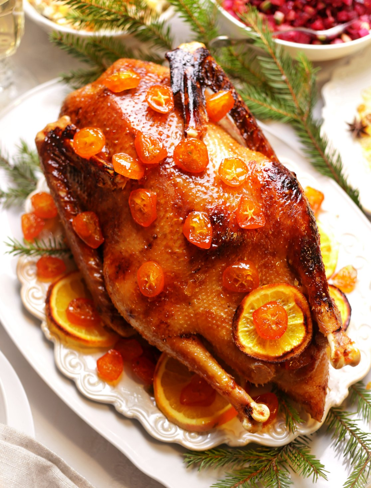

Думаю, любой из нас знакома ситуация — перед Новым годом или Рождеством сначала мотаешься по магазинам, закупаешь продукты и всё сопутствующее по списку. Потом начинаешь готовить и одновременно приводить в порядок и украшать дом, чтобы было чисто, красиво и вкусно. В тот самый заветный день, особенно если ещё и гости придут, сбиваешься с ног, нервничаешь, ничего не успеваешь, всё валится из рук... Срываешься на мужа и детей (или ругаешь саму себя), а к вечеру, обессиленная, падаешь за накрытый стол и просто пытаешься отдышаться после всего этого стресса и безумного напряжения. Настроение уже не праздничное, и всё, чего хочется, это чтобы скорее всё закончилось.
Если нет, снимаю шляпу, вы относитесь к тому малому числу людей, которых подготовка к масштабному празднику не выбивает из колеи. Но думаю, что «простым смертным» пригодятся советы, как организовать новогоднее или рождественское застолье и остаться не только в своём уме, но и бодрой, свежей и полной волшебного предчувствия праздника.